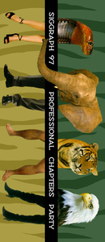
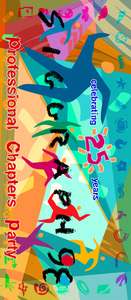
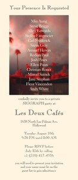
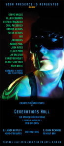
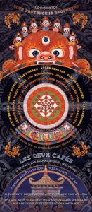

1996 1996 |
1997 | 1998 | 1999 | 2000 | 2001 |
I organized eight SIGGRAPH events begining in the mid nineties.
Continued
My role emcompassed all aspects of event planning including raising the funds, securing and liaising with venues and organizing entertainment such as bands, dj’s, dancers etc.
The work was voluntary as I also had a day job.
I solicited and encouraged help from others to share the workload and supervised the overall visual style of the events.
1995 (Los Angeles)
Continued
I headed a small group at Rhythm & Hues Studios to plan and organize a company party during the annual SIGGRAPH conference.
I booked it at the Mayan Club in Los Angeles. I convinced a local radio station dj, Jason Bentley to play. Although considered risque at the time, I made sure that we had some go-go dancers (male and female).
1996 (New Orleans)
Continued
I approached the president of the Local Chapters division of ACM/SIGGRAPH in New York and offered to co-run an event and raise funding to a higher level.
I did something that had never be done before and approached competitive vfx studios and vendors to co-sponsor the event.
The response was brilliant, the final list of sponsors included: BOSS Film Studios, Digital Domain, Industrial Light & Magic, MetroLight Studios, RFX, Rhythm & Hues Studios, Silicon Graphics, Sony Pictures Imageworks, Square LA,VIFX and The Walt Disney Company.
Budget: $20,000.
1997 (Los Angeles)
Continued
I booked the Los Angeles Zoo and tied two events together, the SIGGRAPH Local Chapters party and D.O.A.
The D.O.A event celebrated the tenth anniversary of the demise of three large computer graphics companies; Digital Productions, Omnibus Computer Graphics and Robert Abel and Associates.
It was attended by former employees of those companies, many of whom who continued within the visual effects industry. The D.O.A event was generously underwritten by Ray Feeney of RFX.
For the SIGGRAPH Local Chapters party, I raised funds, hired an event company to help with the logistics, arranged and contracted entertainment.
We expected a maximum of 5000 people and had over 9000 at one point (luckily the fire marshal was very obliging).
The list of sponsors that year included: Blue Sky Studios, BOSS Film Studios, Cinesite, DEC, DreamWorks SKG, IBM, Industrial Light & Magic, MacGuf Ligne (Paris), Metrolight Studios, Mill Film (London), PDI, RFX, Rhythm & Hues Studios, Square LA, Tippett Studios, VIFX, and The Walt Disney Company.
Budget for the combined events: $88,000.
1998 (Orlando)
Continued
The conference was held in Florida that year, which historically drew a small attendance. However I still raised funds for the SIGGRAPH Local Chapters party, organized entertainment etc.
The list of contributors that year was Cinesite, Industrial Light & Magic, Buf Compagnie (Paris), MetroLight Studios, Mill Film, PDI, RFX, Rhythm & Hues Studios, Side Effects, Softimage, Sony Pictures ImageWorks, Square USA, Tippett Studios and The Walt Disney Company.
Budget: $42,000.
1999 (Los Angeles)
Continued
I decided to host a smaller event without the involvement of ACM/SIGGRAPH.
Contributors included industry colleagues, corporate and industry studios.
Names of representatives from those companies were included on the invitations, but not the company names themselves. This made the event more intimate.
The venue was a restaurant in Hollywood with beautiful courtyards, Les Deux Cafés.
Entertainment included dj’s, belly dancers, snakes, fire eaters etc.
Budget: $25,000.
2000 (New Orleans)
Continued
I continued with the names only approach as opposed to sponsorship logos.
The venue was a large nightclub, with two main dance areas. Entertainment included burlesque, bands, dj’s and other distractions.
The contributors were: Steve Briggs, Allen Edwards, Stefen Fangmeier, Carl Frederick, Arnaud Hervas, Fleur Hervas, Min Aung, Jim Morris, Josh Pines, Ellen Poon, Liz Ralston, Christian Rouet, Blake Senftner, Andy White and myself.
Budget: $50,000.
2001 (Los Angeles)
Continued
I returned to Les Deux Cafés for the venue.
No direct corporate affiliation just names from corporate sponsors.
The contributors were: Steve Briggs, Pierre Buffin, Rose Duignan, Allen Edwards, Stefen Fangmeier, Carl Frederick, Arnaud Hervas, Fleur Hervas, Min Aung, Josh Pines, Ellen Poon, Liz Ralston, Christian Rouet, Blake Senftner, Robin Shenfield, Andy White, Mr. X and myself.
Budget: $50,000.